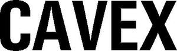

Trade Mark Journal No.2025/043 24 October 2025
WO0000000185370 (6,7,12)
Office of origin: Germany
Date of International Registration:10 June 1955
Date of designation in the UK:
28 August 2025

- Class 6
- Mechanically shaped metals, namely turned parts, lathe-shaped parts, milled, planed and drilled parts; forgings, namely hand-forged parts or rammer-forged parts, stamping parts.
- Class 7
- Cast iron for machines, namely cages, cage covers, bearings, posts, frames, beds and machine bodies; sheet metal stampings, namely hoods, protective covers, solid wheels; vehicle parts, machine parts, namely axles, clutch and declutch apparatus, cranks, rods, housings, housing covers, frames, posts and benches for machines, connecting rods and piston rods, camshafts, cam discs, cranks, crank shafts, v-belt pulleys, cable pulleys, belt tensioners, friction couplings, magnetic couplings, shaft couplings, brakes and brake linings, coupling and brake control levers, bearings, bearing housings, bearing shells, ring-type greased bearings, vertical bearings, suspended bearings, ball-bearings, needle bearings, roller bearings, lubricators, stuffing boxes, bevel wheels, worm wheels, worm gears, friction wheels, toothed wheels, steering wheels, flywheels, speed regulators, control devices, valve controls, valves for steam engines and driving machines, gear trains, stepless gears.
- Class 12
- Sheet metal stampings, namely hoods, protective covers, solid wheels; vehicle parts, automobile accessories, namely, gear change mechanisms, V-belt pulleys, bevel wheels, couplings, elastic couplings, bearings, bearing shells, bearing brackets, power regulators, steering wheels, friction roller gears, friction clutches, worm gears, worm wheels, steering wheels, shaft couplings, shafts, stuffing boxes, toothed wheels, gears; electromotors.
Cavex GmbH & Co. KG
Representative: Friedrich Graf von Westphalen & Partner, Kaiser-Joseph-Straße 284, 79098 Freiburg, GERMANY